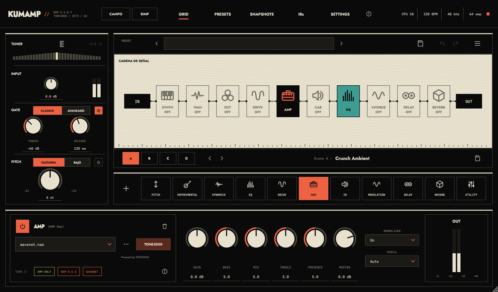
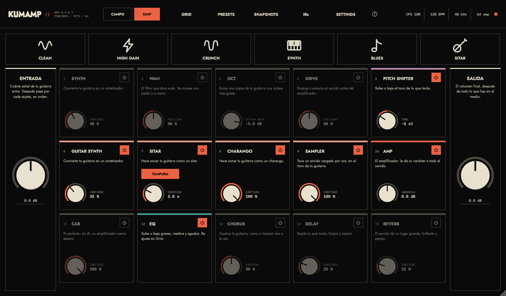
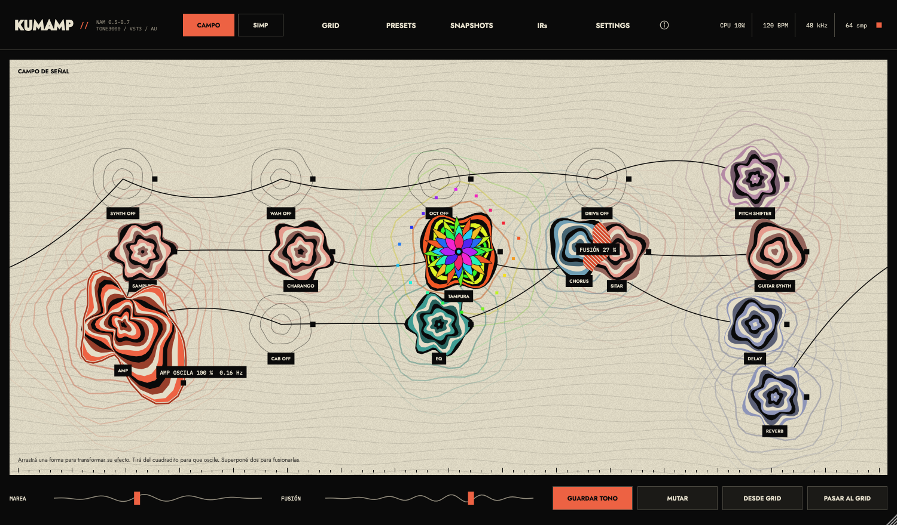
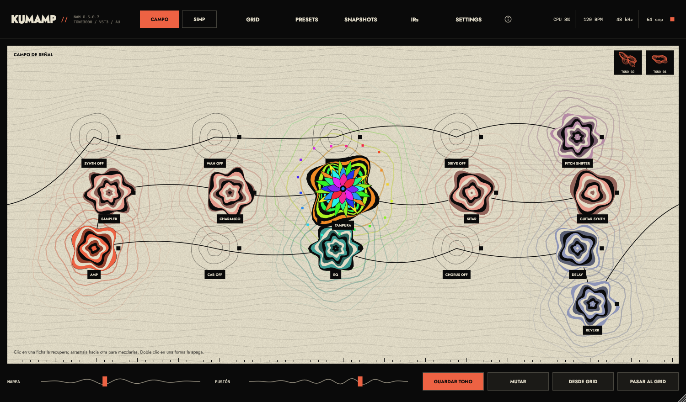
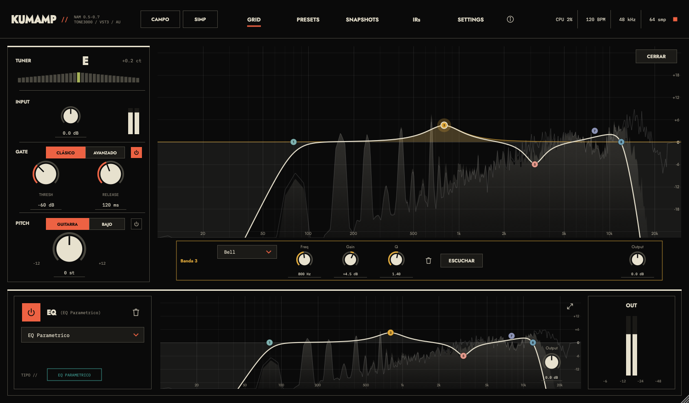
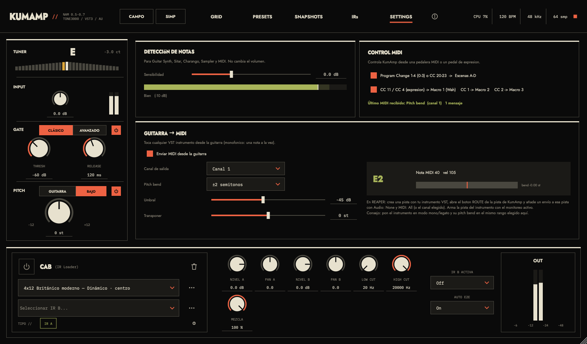

Datos, textos e imágenes de KumAmp para publicarlo en kumodev. Versión publicada: 0.1.9, del 6 de noviembre de 2026.
Las imágenes están en la carpeta capturas/, al lado de este archivo. Miden 1500 × 880 px. La foto del autor está aparte, en capturas/kumo-caro.jpg, de 1248 × 912 px.
| Nombre | KumAmp |
|---|---|
| Tipo | Pedalera modular para guitarra y bajo, con modelado neural de amplificadores |
| Autor | Kumo Caro |
| Web del autor | https://www.kumodev.com |
| Formatos | VST3, AU y aplicación independiente. AU solo en Mac. |
| Sistemas | macOS 12 o posterior (Apple Silicon e Intel). Windows 10 o posterior (64 bits). |
| Licencia | Software libre, GNU GPLv3 |
| Tecnología | C++, JUCE 8, NeuralAmpModelerCore |
| Botón de descarga | https://github.com/kumikocaro/KumAmp-downloads/releases/latest Siempre lleva a la última versión publicada. |
|---|---|
| Todas las versiones | https://github.com/kumikocaro/KumAmp-downloads/releases |
| Código fuente | https://github.com/kumikocaro/KumAmp |
| Datos de la última versión | https://api.github.com/repos/kumikocaro/KumAmp-downloads/releases/latest |
Los enlaces directos a cada instalador cambian en cada versión, porque el archivo lleva el número en el nombre. En esa dirección de datos, el instalador de Mac termina en .pkg y el de Windows en .exe.
Título: KUMAMP
Bajada: Una pedalera entera, un amplificador neural y un campo para perderse.
Descripción corta: Pedalera modular para guitarra y bajo. Armá tu cadena con 34 bloques, cargá modelos de amplificador NAM y elegí cómo trabajar: con todo el detalle, de la forma más simple o explorando sonidos que no sabías que buscabas.
Descripción larga: KumAmp junta en un solo plugin amplificadores neurales, gabinetes, efectos e instrumentos que se tocan con la guitarra. La cadena se arma como un circuito, en serie o en paralelo, con cuatro escenas por preset. Tiene tres formas de usarse: Grid para controlar cada detalle, Simp para entender qué hace cada cosa con una sola perilla, y Campo para deformar y fusionar efectos hasta encontrar un sonido nuevo. Es software libre, y funciona en Mac y Windows dentro de tu DAW o por su cuenta.
Archivo: capturas/1-grid.png

La vista completa. Muestra la cadena de bloques de entrada a salida, y abajo los controles del bloque elegido. A la izquierda están el afinador, la entrada, el gate y el pitch. Sirve para controlar cada parámetro, armar rutas en paralelo y usar cuatro escenas por preset.
Archivo: capturas/2-simp.png

La misma cadena, explicada. Cada efecto es una tarjeta numerada con una frase que dice para qué sirve, un botón de encendido y una sola perilla. Arriba hay seis sonidos a un toque: Clean, High Gain, Crunch, Synth, Blues y Sitar. Comparte los valores con el Grid.
Archivo: capturas/3-campo.png

Un instrumento aparte, con su propia copia de la cadena, que no toca el Grid. Arrastrá una forma para transformar su efecto, estirala para que oscile y superponé dos para fusionarlas: la salida de cada efecto entra al otro. Lo que descubras se guarda como tono en el mismo Campo.
Archivo: capturas/4-campo-tampura.png

El tampura, el drone del Sitar, tiene su propia forma: un mandala de colores. Moverlo transforma el drone. Superponerlo con otra forma hace que el drone pase por ese efecto.
Archivo: capturas/5-eq.png

El ecualizador paramétrico de 8 bandas, en grande: curva de respuesta sobre un analizador en vivo.
Archivo: capturas/7-settings.png

La sensibilidad de detección de notas, el control por MIDI y la salida de guitarra a MIDI.
Archivo: capturas/8-acerca-de.png
La sección con el autor, su página, la versión y la licencia.
Archivo: capturas/kumo-caro.jpg
| Familia | Bloques |
|---|---|
| Pitch | Pitch Shifter, Wah, Auto Wah, Octaver |
| Experimental | Guitar Synth, Sitar, Charango, Sampler |
| Dinámica | Noise Gate, Compresor, Transient Shaper |
| EQ | Paramétrico, Gráfico |
| Drive | Overdrive |
| Amp y gabinete | NAM, IR Loader |
| Modulación | Chorus, Flanger, Phaser, Tremolo, Rotary, Univibe, Bitcrusher |
| Delay | Digital, Analog, Tape, Reverse, Repeat Percussion |
| Reverb | Plate, Hall, Spring, Shimmer, Cloud |
| Utilidad | Volumen |
Son capturas de una herramienta de prueba del proyecto, no de una sesión real. En Grid el campo del preset está vacío y el amplificador usa wavenet.nam, un modelo de ejemplo. En el Campo, las posiciones de las formas y las fichas de tonos son de prueba.
Usa JUCE, el SDK de VST3, el SDK de ASIO, NeuralAmpModelerCore, Eigen y nlohmann/json. Tipografías Jost e IBM Plex Mono. Lista completa con licencias: https://github.com/kumikocaro/KumAmp/blob/main/THIRD_PARTY_NOTICES.md